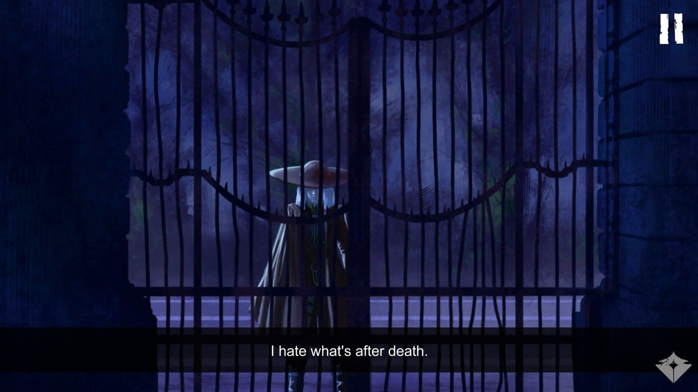
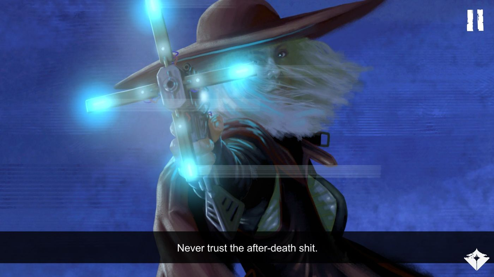
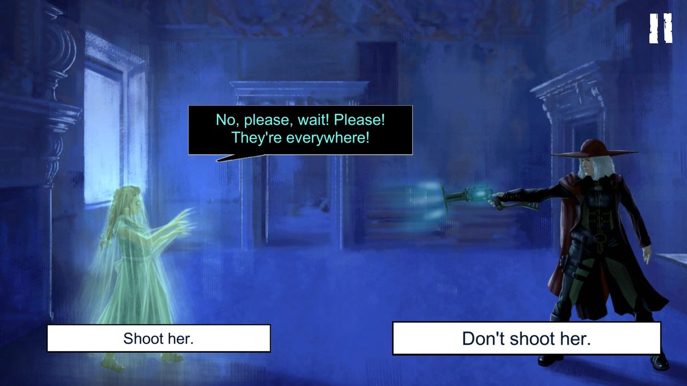

Branching · Design document
Requiescat
Nocturama Bononia · 2021
Perhaps, for the first time, she has really been fooled.
A ghost hunter must decide whether to shoot a terrified ghost girl. That choice decides whether the girl will trust her, and so what the ending reveals. The last choice, whether to use an untested weapon, is prepared by two warnings early in the episode: refusing it costs Dalia everything.
Structure
Remembered as a state until the end
If she was shot · cube
If she was spared · cube
No cube
A further choice during the fight (whom to attack first) changes only how the fight plays out, so it is left out of the diagram.
Dalia’s voice
intimate and weary. Concrete objects, short breaths, a professional who has seen too much.
One letter. Just one letter. A shaky, uncertain handwriting.
It has been years since I last received a letter with which someone wanted to hire me. Years since anyone contacted me like this.
And the paper… it seemed to belong to another time…
I barely managed to read it and the paper had already turned to dust. Dust and ink stains.
But I have no doubt about what I read.
“Please help me! I’m in Villa Clara! I can’t get rid of them, they want me!”
“They say it’s my fault… please, I can’t take it anymore…”
Who can ask for help this way? Why would they send me a letter? The records say that Villa Clara has been abandoned for centuries.
This could be a trap. I’ve been hunting death for years…
…but death adapts, like any hunted species. It cheats, to survive.
No, not death, but what’s after death.
I hate what’s after death.
From the design document
The fork, and the two versions of the same frame that carry the first choice forward.
Frame 31
Side view. On the left, Clara, terrified of Dalia’s weapon; on the right, Dalia aims at her. Two clickable captions, and the story forks.
Clara: No, please, wait! Please! They’re everywhere!
Caption 1, “Shoot her.” Go to frame 32.
Caption 2, “Don’t shoot her.” Go to frame 35.
Frame 40 · If Dalia shot
Clara, wounded by Dalia’s shot, at the centre; the Count’s henchmen appear at the back.
Clara: Ahhh… no… no, wait… I don’t want to…
Frame 41 · If she did not
The same frame, but Clara is unharmed and terrified.
Clara: There they are! Stop, stop…
Both go on to frame 42. At the end, the first choice routes to frame 59 or 61.
Setup
Frame 5 · The Gunsmith, at the start
Gunsmith: The cube is new and really powerful, but undertested. It could be very dangerous, possibly lethal.
Gunsmith: But you know what’s after death, don’t you?
Frame 17 · Dalia, on her way to the villa
Dalia (caption): For what’s after death we need traps. Good weapons.
Dalia (caption): Otherwise, that scum wanders aimlessly. And the only trap to confine it is our bodies.
Two warnings, early on. Both pay off only in Ending 3.
The endings
Endings 1 and 2 share the same frame: what changes is whether Dalia shot Clara at the start. Ending 3 is where the setup pays off.
Dalia kneels beside Clara and looks at the wound she gave her.
Clara: Thank you… nfff… I owe you a lot…
Dalia: It’s… just a flesh wound. What you’re made of will cure it shortly.
Clara: Don’t… go…
Dalia: I’ll stay until dawn. Now rest.
Gratitude, but no story.
The same frame, with Clara standing, unharmed.
Clara: I remember those people around me, then nothing… then they stayed here, in the Villa. They died in my house…
Clara: They only wanted me, even afterwards… they said it was my fault…
Dalia: It’s okay. It’s over.
Clara: Please don’t go…
Trust earned: Clara tells her story.
Frames 63–72
Dalia (caption): I can’t… but that girl hired me…
Dalia (caption): When you don’t have any tricks left against that scum…
Dalia (caption): …only one trap remains. Our body.
Dalia runs herself through with her staff, and the Count with her. Then, a close-up: we begin to glimpse her ghost form.
Clara: Thanks…
Dalia (caption): Now the girl can rest peacefully.
Dalia (caption): And I with her, here at Villa Clara.
The Gunsmith’s warning makes refusing the cube a real choice; Dalia’s rule about traps becomes her sacrifice.
In the released game


